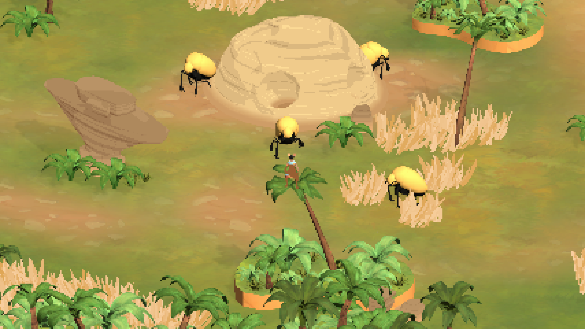

April - June 2023
Untitled Desert Adventure is a game where you are a young child from a desert tribe, who gets separated from their family when crossing a river. You eventually wash up on the river bank. From there you follow the river upstream again to get back to your tribe. During your adventure upstream you come across multiple dangerous creatures, which you have to avoid. Later you find a spear, but being a small child, you struggle to wield it successfully. With both the spear and your ability to evade the creatures, you can find your way back to your family.
This project took place during Project Vrij II at HKU, where we could choose freely what we wanted to work on during the eight weeks set aside for this project. My roles for this project were team and development lead, where I was responsible for project management, code for the enemy behaviour and integration of all systems into the game.
